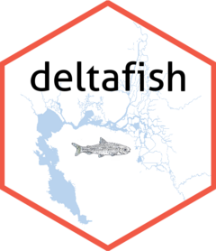

Package index
-
create_fish_db() - Create fish database
-
clear_cache() - Clear cached deltafish files
-
is_cache_updated() - Is cached data up to date with latest EDI data
-
show_cache() - Show list of cached deltafish files
-
show_cached_revision() - Show revision number of cached files
-
open_database() - Connect to database
-
open_fish() - Connect fish data
-
open_length_conv() - Connect length conversion data
-
open_survey() - Connect survey data
-
close_database() - Close connection to database
-
collect_data() - Collect data into R
-
convert_lengths() - Convert fish length
-
remove_unknown_lengths() - Remove unknown fish lengths